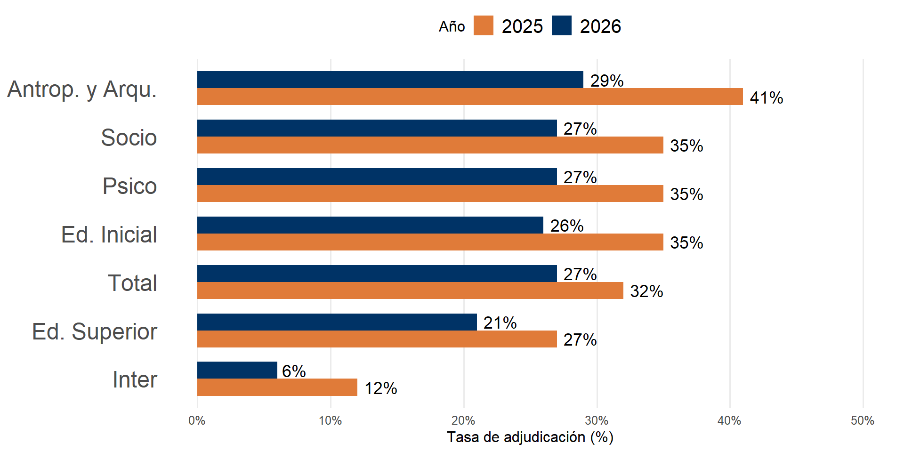
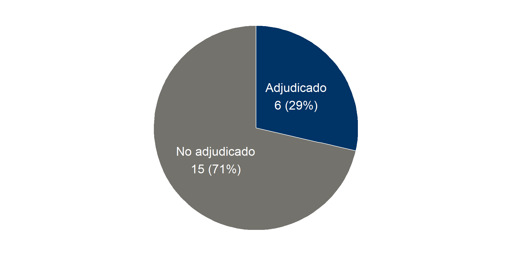
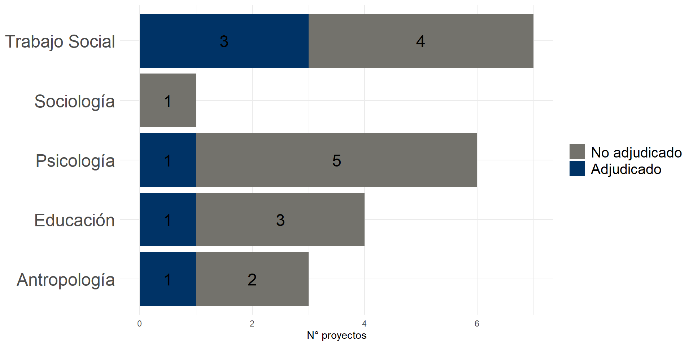
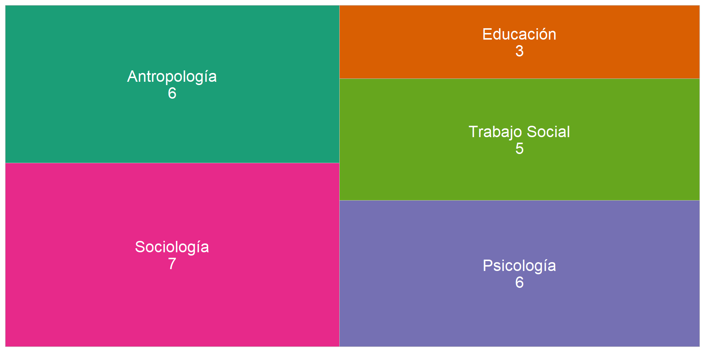

Reporte FONDECYT Regular 2026
Dirección de Investigación y Publicaciones – FACSO
marzo, 2026
Proyectos Adjudicados 2026
6 proyectos adjudicados en el concurso 2026
El profesionalismo Pedagógico de la Sala Cuna: Modelo Situacional del Caso Chileno en Perspectiva Comparada, Prof. Cynthia Adlerstein, Departamento de Educación
Un Océano Plástico: Hacia Una Antropología De La Polución Marina En El Antropoceno, Prof. Franciso Araos, Departamento de Antropología
Adecuaciones Del Modelo Sindical A 45 Años Del Plan Laboral. Condiciones Organizativas Y Estratégicas Para Una Negociación Ramal En Chile, Prof. Gonzalo Durán, Departamento de Trabajo Social
Proyectos Adjudicados 2026
6 proyectos adjudicados en el concurso 2026
El Futuro Del Consumo ¿Ahora? Tensiones Y Prácticas De Consumo Material, Simbólico Y Postmaterial En Sociedades Desiguales, Prof. Alejandro Marambio, Departamento de Trabajo Social
Memorias En Disputa Sobre El Levantamiento Social Del 2019 En Chile Y Los Sentidos Que Construyen Sobre Los Ddhh, Prof. Isabel Piper, Departamento de Psicología
Tiempo Y Memoria Disciplinar: Producción De Conocimiento Del Trabajo Social Chileno En Tres Claves Temporales (1925-2025), Prof. Gabriela Rubilar, Departamento de Trabajo Social.
Contexto

Tasa de Adjudicación

Adjudicación por Departamento

Evolución Temporal (2017-2026)
Ajuste por media móvil (4 años)
Fondecyt Regular en ejecución 2026
27 proyectos Fondecyt estarán en ejecución durante el 2026*


DIP – FACSO